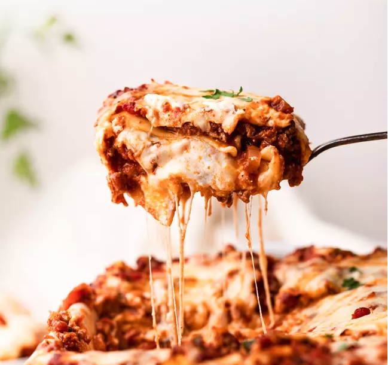

Lasagna

Description
Everyone loves a good lasagna, right? It's a great way to feed a crowd and a perfect dish to bring to a potluck. It freezes well. It reheats well. Leftovers will keep you happy for days.
There are a few minor tweaks to his original recipe that I found necessary, for example adding a dash of wine vinegar to the sauce and changing the amount of Parmesan cheese.
Ingredients
- 2 teaspoons extra virgin olive oil
- 1 pound beef chuck
- 1/2 medium onion
- 1/2 large bell pepper
- 2 cloves garlic
- 1 can tomato sauce
- 2 tablespoons chopped fresh oregano
- 1/4 cup chopped fresh parsley
- 1 tablespoon Italian seasoning
- 1 pinch garlic powder and/or garlic salt
- 1 tablespoon red or white wine vinegar
- 1 tablespoon to 1/4 cup sugar
- Salt
Steps
- Put pasta on water to boil
- Brown the ground beef
- Cook the bell pepper, onions, garlic, add back the beef
- Transfer to medium sized pot, add tomatoes and remaining sauce ingredients to build the sauce
- Boil and drain the lasagna noodles
- Assemble the lasagna
- Bake
- Cool and Serve